POS Session View
After adding products to the cart,if seller want to send this order to any other active POS Session, then seller can click on send button to send this order as quotation.
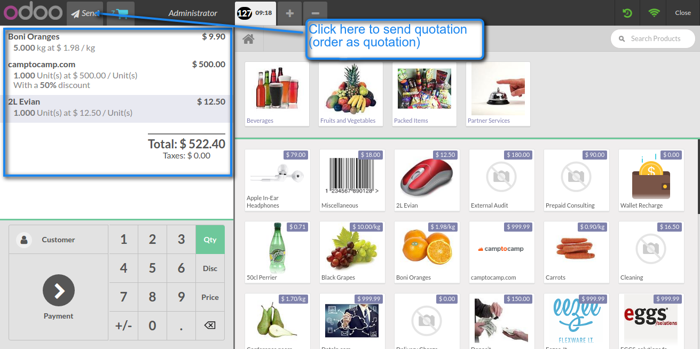
On clicking send button, a popup window will be shown as shown below.Seller can select POS here and send quotation as well as print quotation details. On clicking 'Send and Print' button, quotation will be send and quotation receipt will be generated automatically
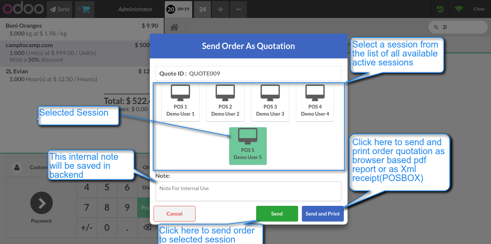 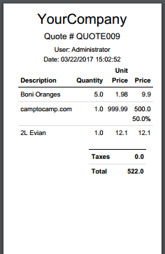
This message will be shown, if order is successfully sent to other session.
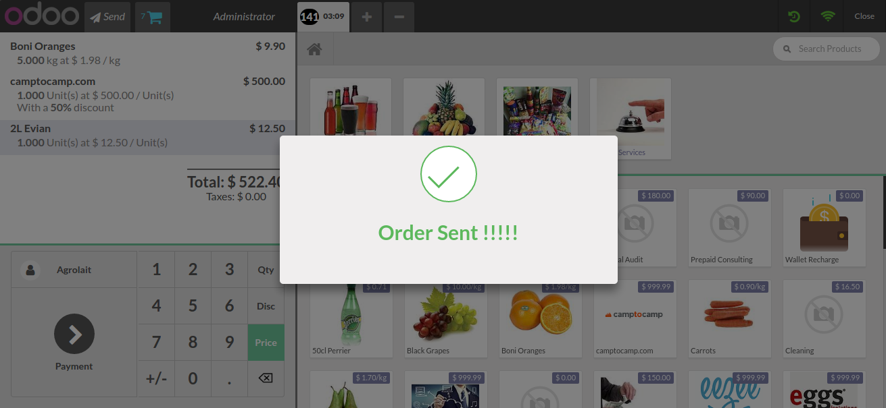
To load quotations(orders) that are sent by other POS Session to current running POS Session, click on load button. To update quotation list at any time, click on refresh button as shown below. If any quotation(order) is available to load for current running session then load button will be highlighted automatically
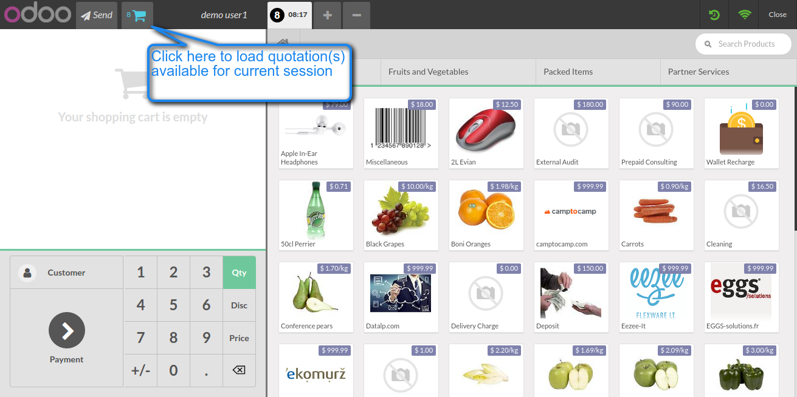
Seller can Filter quotation on the basis of quote id,customer and load quotation by click on quotation.

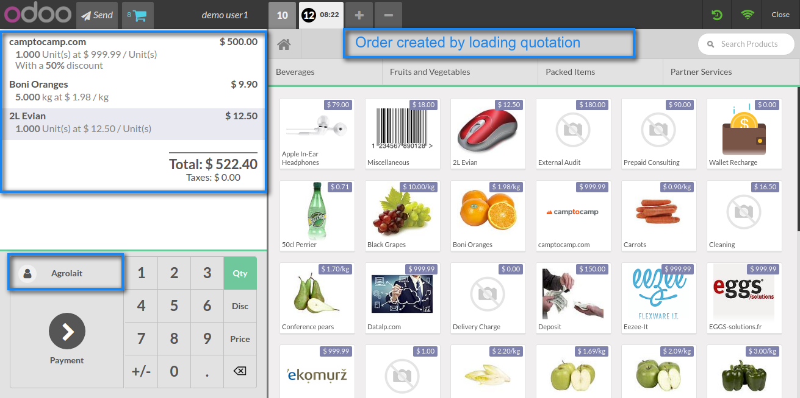
Click this button to see history and state of all those quotations that are sent by current running POS Session.
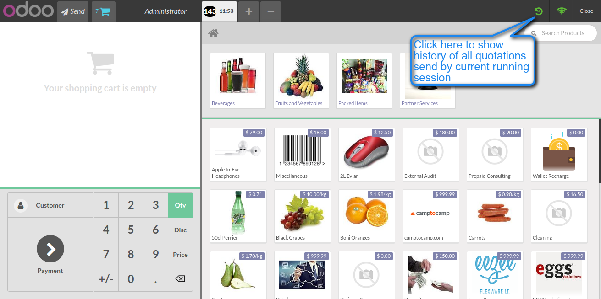
This history popup will be shown on click history button.Seller can see state of all those quotations that are sent by his POS Session.
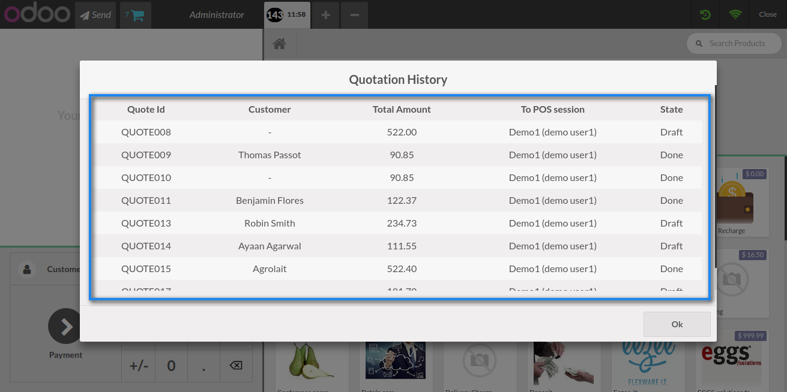
Backend View and Configuration
Select between the option to print quotation in pdf format or in POSBOX receipt.
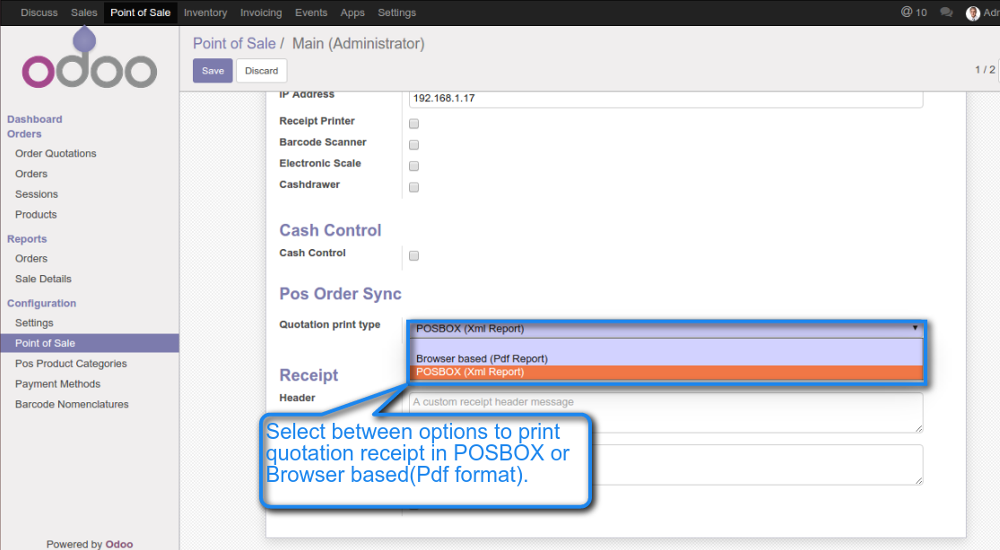
After creating quotation in POS session,quotaion is also saved in backend as shown below.
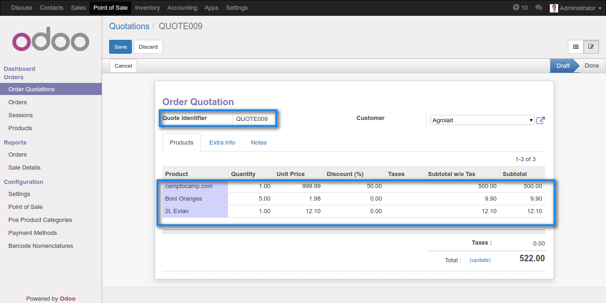
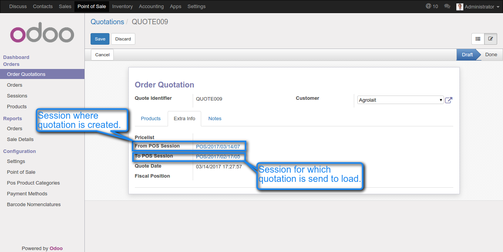
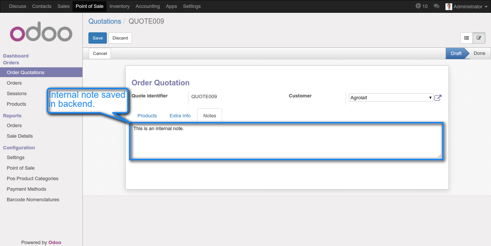
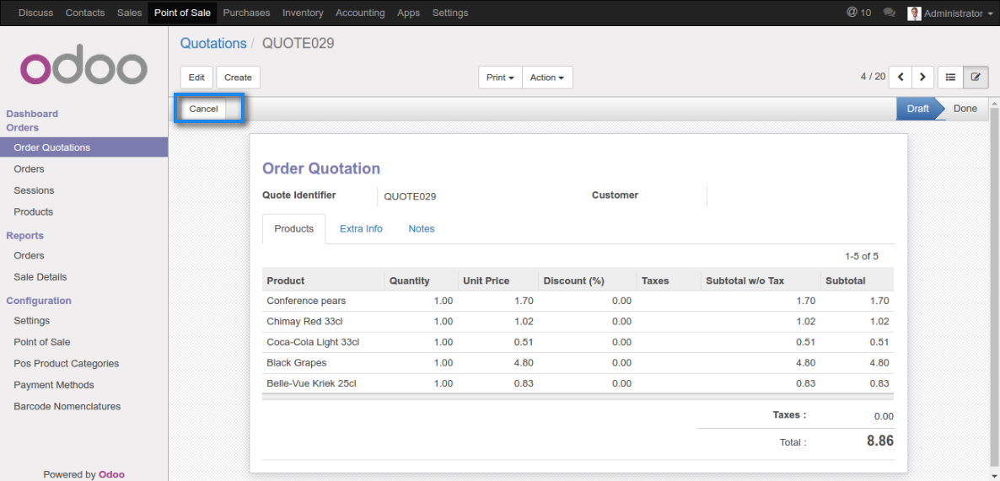
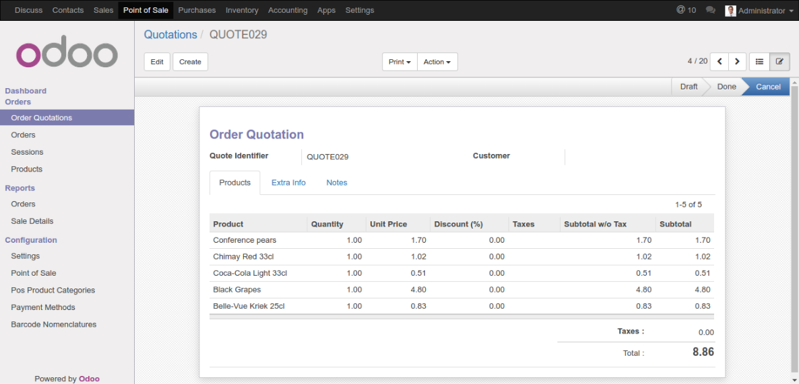
Legend
- [Features Added]
- [Features Removed]
- [Bug Fixed]
Sync or save pricelist selected in order from POS Session to Quotation(backend).
Update 'Send Quotation/Order' popup view.
Quotation list will be automatically updated on clicking load quotation button.